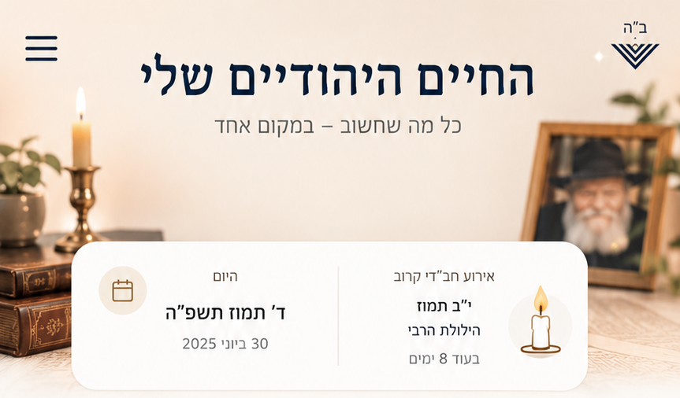

החיים היהודיים שלי
כל מה שחשוב – במקום אחד
צפה בכל ימי ההולדת
הצעה יומית עבורך
היום יום ד׳ תמוז – זמן של חיות והתעלות
הקדש כמה דקות היום ללימוד חסידות.
כל מילה היא נר קטן שמאיר את הנשמה.
ד׳ תמוז תשפ״ה
30 ביוני 2025 · יום שני
פרשת השבוע: קרח
בחר מצווה / החלטה טובה